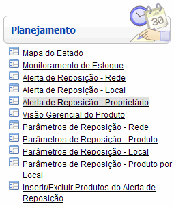

Alerta de Reposição - Proprietário [ Voltar ] Utilize esta
tela para consultar a posição de estoque atual dos produtos do proprietário.
Informações como estoque atual, mínimo, máximo, ponto de ressuprimento,
sugestão, encomendas pendentes, estoque virtual, entre outras
informações úteis ao planejamento, são acessíveis por meio desta tela.
O formulário "Alerta de Reposição - Proprietário"
encontra-se dentro do menu "Planejamento".

Ao clicar no formulário, o sistema exibirá a seguinte
tela:
A tabela de resultado desta tela exibe as seguintes informações:
- Código do Produto: código do produto no sistema.
- Descrição do Produto: descrição completa do produto.
- UN: unidade de medida cadastrada para o produto.
- Grupo: grupo de produtos ao qual o produto pertence.
- ABC: classificação do produto conforme sua importância.
- Estoque Total do Proprietário: quantidade total em estoque e disponível para consumo no local onde o usuário se encontra.
- Estoque Rede: quantidade total em estoque e disponível para consumo na rede.
- Demanda: quantidade mensal demandada para este produto, incluindo solicitações de consumo e transferência.
- ES:
Estoque de Segurança. Corresponde à quantidade mínima desejável em
estoque para este produto, com fins de prevenção a incertezas
de fornecimento edemanda.
- PR:
Ponto de Ressuprimento ou Reposição do produto. O cálculo deriva da
soma: Estoque de Segurança + (Demanda Mensal do Produto x Tempo de
Ressuprimento).
- EM: Estoque Máximo. Consiste na maior quantidade admissível em estoque.
- Sugestão:
cálculo de reposição sugerido pelo sistema. O cálculo principal da
sugestão consiste em: Estoque Máximo - Estoque Virtual + Estoque de
Segurança. Porém, este cálculo pode ser sobreposto ao cálculo de
parâmetros de reposição para o Local e para o Produto. A hierarquia de
sugestão é: Produto > Local > Rede.
- Encomendas Pendentes: ordens de compra já processadas cujo recebimento está pendente.
- Estoque Virtual: trata-se do estoque local atual mais as encomendas ainda não recebidas.
- Demanda Agregada.
- Sugestão c/ Demanda.
- Cobertura de Estoque: tempo (em dias) em que o estoque médio será suficiente para suprir a demanda média do produto.
- Quantidade Definida: informe neste campo a quantidade desejada para uma requisição de compra.
- Remover Produto:
Para consultar o planejamento de estoque, siga os passos abaixo:
1° Passo: configure os filtros da pesquisa.
- Produto - Inicia com. Para localizar um determinado produto, digite aqui a iniciais do código do mesmo. Se desejar, clique no botão
 [Procurar] para selecioná-lo a partir de uma listagem contendo todos os produtos cadastrados. [Procurar] para selecioná-lo a partir de uma listagem contendo todos os produtos cadastrados. - Conta Contábil. Se desejar localizar produtos pertencentes a uma conta contábil específica, selecione-a neste campo.
- Descrição do Produto. Para localizar um produto por meio da descrição do mesmo, digite aqui uma palavra-chave.
- Grupo Principal. Digite aqui as inicias do número do grupo de produtos para o qual deseja retornar resultados.
- Curva ABC. Selecione aqui a classificação desejada para os resultados: A, B ou C.
- Cobertura de Estoque (em dias). Digite aqui o número em dias para a cobertura mínima desta consulta
2° Passo: clique no botão  para
gerar os resultados. Os resultados serão exibidos imediatamente na parte inferior da tela. para
gerar os resultados. Os resultados serão exibidos imediatamente na parte inferior da tela.
Na
seção "Legenda" na parte inferior da tela, o usuário tem uma legenda de
cores para interpretação dos resultados da pesquisa. Ainda, para listar
exclusivamente produtos em determinada situação de estoque, clique na
legenda desejada.
3° Passo: para gerar uma requisição de compra, informe a quantidade definida para os produtos desejados.
Na tabela de resultados, informe no campo "Quantidade Definida" a
quantidade solicitada do produto selecionado. Repita o procedimento
para todos os produtos desejados.
4° Passo: após definidas as quantidades desejadas, clique no botão para gerar uma ordem de fornecimento.
Para mais informações sobre requisições de compras, favor consultar o manual "Ordens de Fornecimento".
|